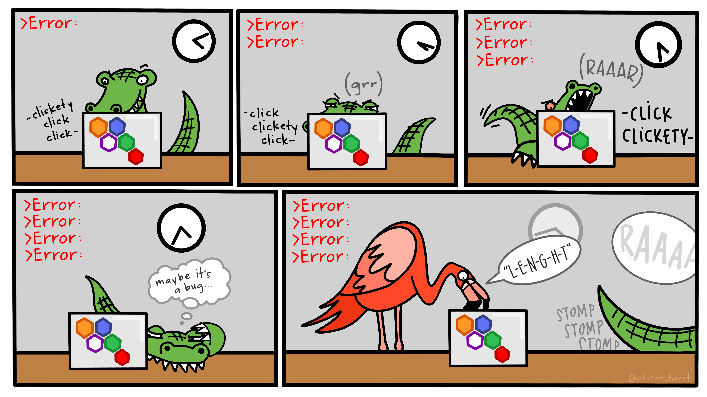

Hey, Nice to Meet You
Welcome to my personal page

Who I Am
📚 Statistician/Last Period - Universidade Federal de Juiz de Fora
😷 Epidemiological Researcher CNPq at JFSalvandoTodos
💹 Working with time series models (ARMAX, GARMAX and NNETAR) for epidemiological forecast
📊 Statistical Consultant for Postgraduate Students